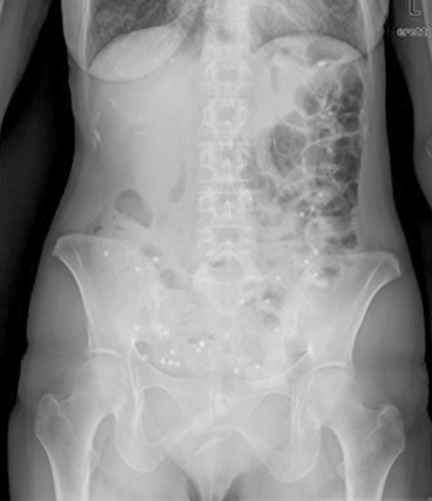
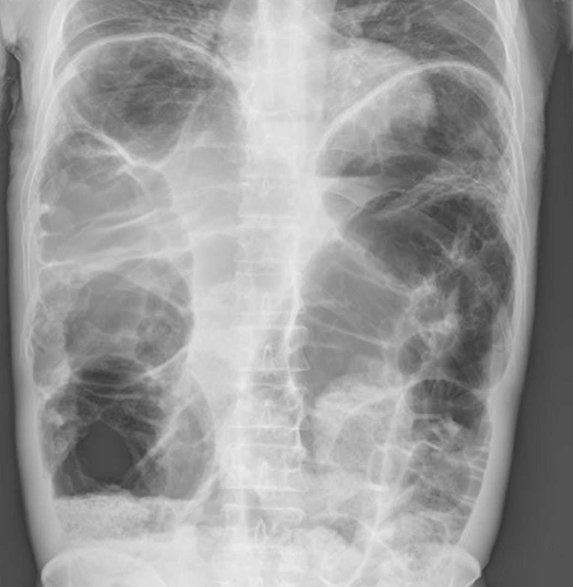

Functional Disorders of the Intestine
Summary
These are the conditions where the anatomy is normal and the motility is not, and the surgical lesson is largely negative. In intestinal pseudo-obstruction, surgery (with the exception of feeding tubes or a venting stoma) is impotent against what is a diffuse neuromuscular disease, and worse than useless: it adds the risk of adhesions to the diagnosis and, if resections or complications follow, speeds the patient towards intestinal failure [1]. This page covers the tests of small bowel and colonic function, slow-transit constipation, and intestinal pseudo-obstruction with its primary and secondary causes.
Definition
Intestinal pseudo-obstruction is a clinical syndrome caused by severe impairment of intestinal motility, leading to small intestinal dilatation in the absence of a mechanical cause [1]. The term "chronic" is sometimes added for clarity [1].
Slow-transit constipation is diagnosed where a significant number of ingested radio-opaque markers are retained at the interval radiograph, judged against control data [1].
Pathophysiology
Primary pseudo-obstruction is a disease of the enteric nerve or muscle. Approximately half of cases arise shortly after birth or in infancy, caused by very rare enteric neuropathies and myopathies, genetic and familial, inflammatory and degenerative forms; where no cause is found the condition is termed idiopathic [1].
Secondary cases arise later in life, when an underlying cause is more commonly identifiable [1].
Megacolon and pseudo-obstruction in Schwartz's account
- Megacolon is a chronically dilated, elongated, hypertrophied large bowel, congenital or acquired and usually related to chronic mechanical or functional obstruction, its degree proportional to the duration of obstruction; evaluation must always include endoscopic or radiographic examination of colon and rectum to exclude a surgically correctable mechanical cause [2].
- Hirschsprung's disease, from failure of neural crest migration to the distal bowel, occasionally presents in adulthood when an extremely short segment is affected (ultrashort-segment disease); acquired megacolon follows Trypanosoma cruzi infection (Chagas' disease), which destroys ganglion cells and causes both megacolon and megaoesophagus, or chronic constipation from slow transit, anticholinergic drugs or neurological disorders (paraplegia, poliomyelitis, amyotrophic lateral sclerosis, multiple sclerosis), and diverting ileostomy or subtotal colectomy with ileorectal anastomosis is occasionally necessary [2].
- Colonic pseudo-obstruction (Ogilvie's syndrome) is massive dilatation without mechanical obstruction, commonest in hospitalised patients on narcotics with bed rest and comorbidity, attributed to autonomic dysfunction and severe adynamic ileus, and predominantly affecting the right and transverse colon [2].
Clinical features
Pseudo-obstruction presents exactly like mechanical small bowel obstruction, with pain, distension and vomiting [1], which is precisely why it leads to unnecessary laparotomy.
Suspicion is raised by absence rather than presence. It is merited where there is no obvious cause for mechanical obstruction (no known bowel disease, no previous surgery, no hernia) and by the length of the history [1].
Knowing the secondary causes turns the examination into a diagnostic tool. A smoker with finger clubbing may have a small cell lung carcinoma causing paraneoplastic pseudo-obstruction; another patient may have the clinical signs of scleroderma [1].
Aetiology
Causes of intestinal pseudo-obstruction [1]:
| Group | Causes |
|---|---|
| Primary | Several very rare enteric myopathies and neuropathies; idiopathic |
| Secondary | Connective tissue disease, especially scleroderma; radiation injury; amyloidosis; autonomic neuropathies including diabetes and paraneoplasia; infection, Chagas' disease |
Pseudo-obstruction is a rare disease [1].
Diagnosis
Axial imaging is essential to exclude mechanical obstruction [1]. Adjunctive blood and imaging tests may define a cause, and can extend to MRI of the brain and skeletal muscle biopsy for rare diagnoses such as mitochondrial myopathies [1].
Primary neuropathies and myopathies are diagnosed histologically, but this requires full-thickness tissue and a variety of special stains available only in specialist centres [1]. Since laparotomy and bowel resection are best avoided, a laparoscopic or minilaparotomy full-thickness biopsy may be warranted [1].
Tests of small intestinal function
Transit is assessed by small bowel barium contrast study, breath hydrogen transit tests using lactulose or lactose 13C-ureide, and the wireless motility capsule [1]. Contractile activity is assessed by antroduodenal manometry (ideally a prolonged 24-hour ambulatory study) and dynamic MRI [1].
The breath hydrogen test has real limitations. It is a test of carbohydrate malabsorption and an indirect measure of transit, because stagnant content allows bacterial overgrowth and fermentation products, hydrogen, methane and carbon dioxide; although frequently used in unexplained chronic abdominal symptoms such as irritable bowel syndrome, its utility in reliably measuring transit or detecting bacterial overgrowth is limited by reproducibility [1].
Tests of colonic function
Transit is assessed by radio-opaque marker studies, isotope scintigraphy, and the wireless motility capsule whole-gut study; contractile activity by colonic manometry and dynamic MRI [1].
The radio-opaque marker study is the mainstay of colonic transit evaluation [1]. Markers (small pieces of plastic tubing prepackaged in gelatin capsules) are ingested and an abdominal radiograph including the pelvis taken at an interval, with the patient abstaining from laxatives for the duration of the study [1].

Thresholds and severity
Variations in technique exist in the number of markers used, the interval to radiograph and the definition of slow transit, but the premise is constant: retention of a significant number of markers against control data defines slow-transit constipation [1].
Availability differs sharply between these tests, and Bailey & Love flags which are realistically obtainable. The small bowel barium contrast study, breath hydrogen transit tests and radio-opaque marker studies are marked as generally available; the wireless motility capsule has been adopted only by some highly funded health systems [1].
The wireless motility capsule measures pH, temperature and pressure as it traverses the gastrointestinal tract, and changes in those variables determine the timing of its passage from stomach to small bowel to large bowel [1]. It offers advantages in patient tolerability, safety and standardisation, but is not widely available because of cost [1].
Antroduodenal manometry is available in only a small number of centres worldwide, and its findings (while sometimes indicative of small bowel myopathy or neuropathy) have problems of specificity [1].
Dynamic MRI is currently a research tool, but may well represent the future [1].

Treatment and Management
For most patients with intestinal pseudo-obstruction there is no cure [1].
Surgery is contraindicated as treatment, other than for placing feeding tubes or forming a venting stoma, because the condition is a diffuse neuromuscular disease; operating adds adhesions to the problem and accelerates progression to intestinal failure if resection or complications follow [1].
Small bowel or multivisceral transplantation is an option in selected patients [1], covered on the Intestinal and Multivisceral Transplantation page.
Schwartz's stepwise treatment of Ogilvie's syndrome
Initial treatment is cessation of narcotics, anticholinergics and other contributory drugs with strict bowel rest and intravenous hydration, to which most patients respond; colonoscopic decompression is often effective in those who fail but is technically challenging with a real perforation risk and up to 40% recur; a single 2 mg intravenous dose of neostigmine is extremely effective with a lower recurrence rate (20%) but may cause transient profound bradycardia and may be inappropriate in cardiopulmonary disease; a rectal tube rarely helps because the dilatation is proximal; and mechanical obstruction must be excluded, usually by Gastrografin enema, before any medical or endoscopic treatment [2].
Procedural interventions
The only procedures with a defined role are diagnostic and supportive: full-thickness biopsy by laparoscopy or minilaparotomy to obtain tissue without committing to laparotomy [1], and feeding tubes or a venting stoma for symptom control [1].
Complications
The iatrogenic complication is the one to guard against. Suspicion of pseudo-obstruction exists to avoid unnecessary and potentially harmful surgery [1], and surgery worsens the prognosis by adding adhesions and hastening intestinal failure [1].
Outcomes
The prognosis in pseudo-obstruction is set by the underlying neuromuscular disease rather than by anything a surgeon does, and the honest summary is that most patients cannot be cured [1].
Where intestinal failure supervenes, transplantation becomes the remaining option in selected patients [1].
References
- Bailey & Love's Short Practice of Surgery, 28th ed., Ch. 73 Functional disorders of the intestine
- Schwartz's Principles of Surgery, 11th ed., Ch. 29, Colon, Rectum, and Anus
- Sabiston Textbook of Surgery, 22nd ed., Ch. 95 Colon and Rectum